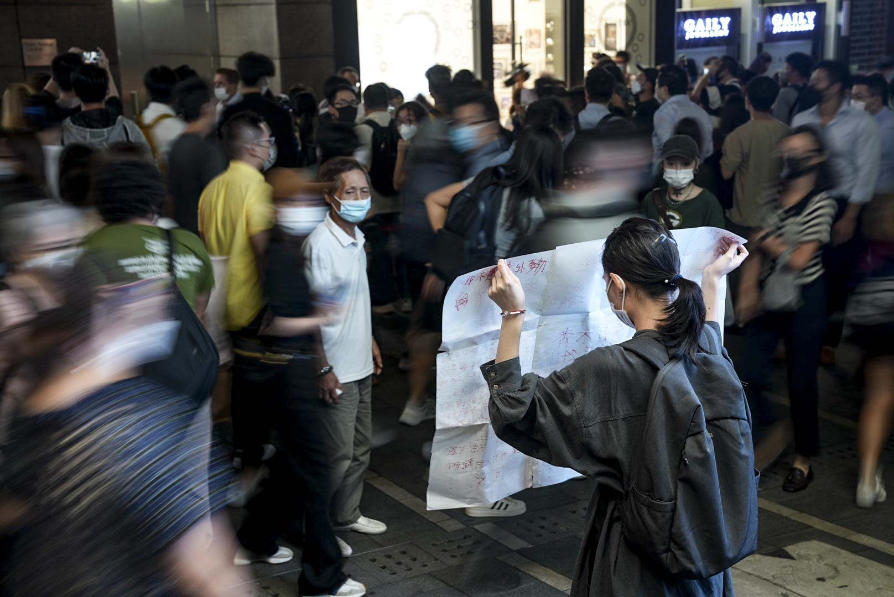
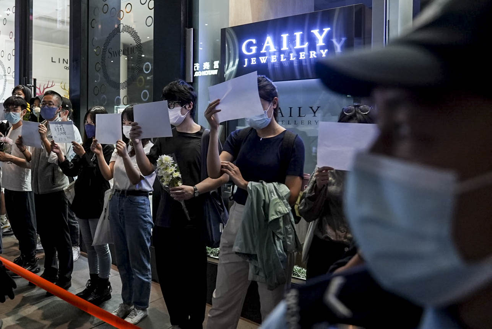
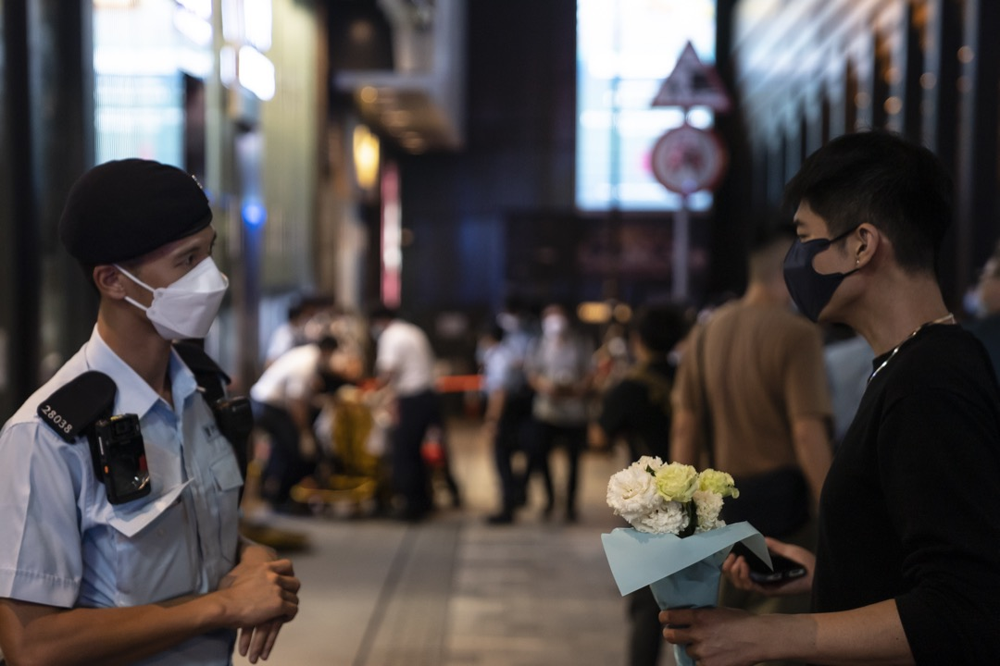
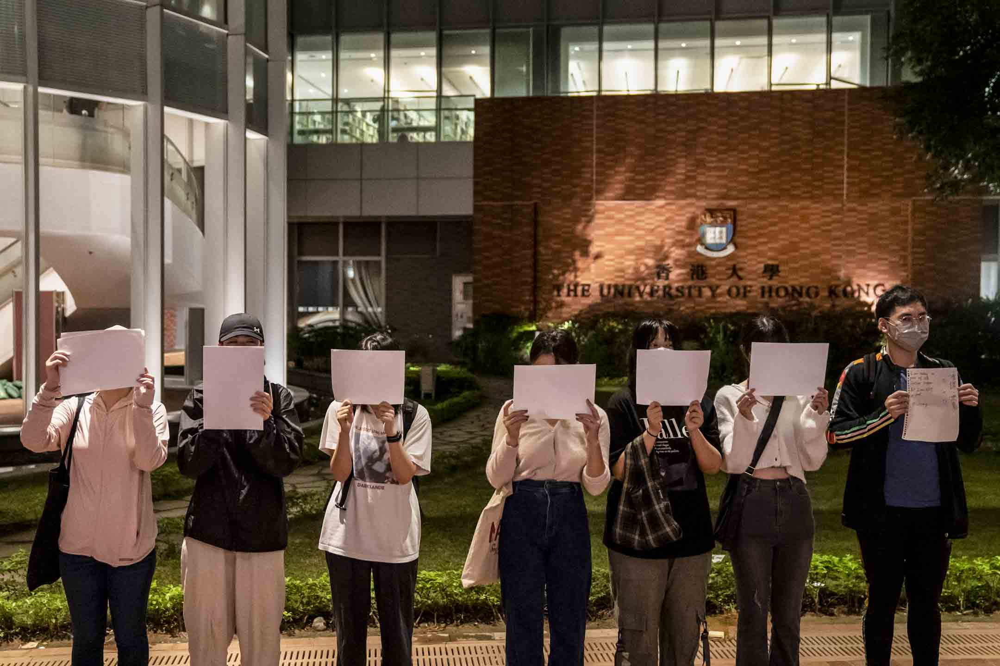
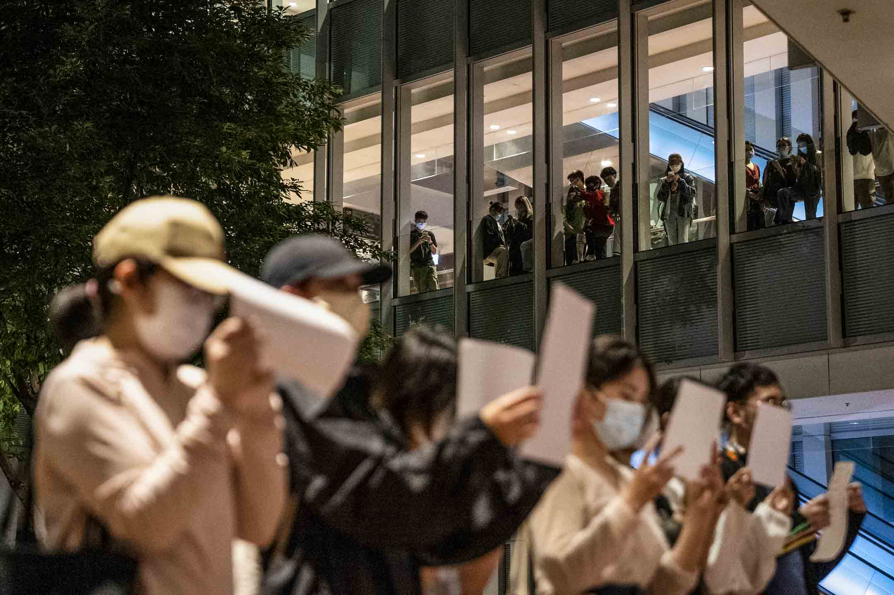
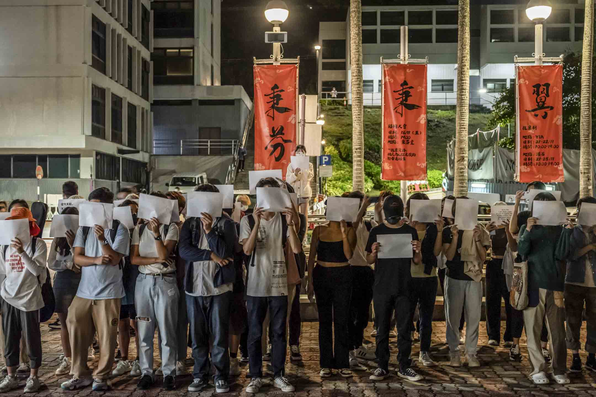
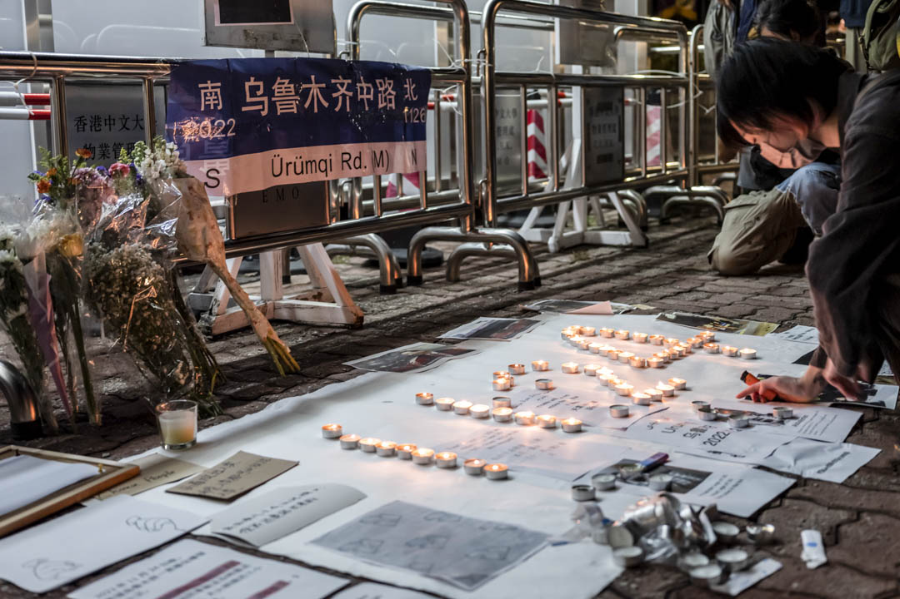
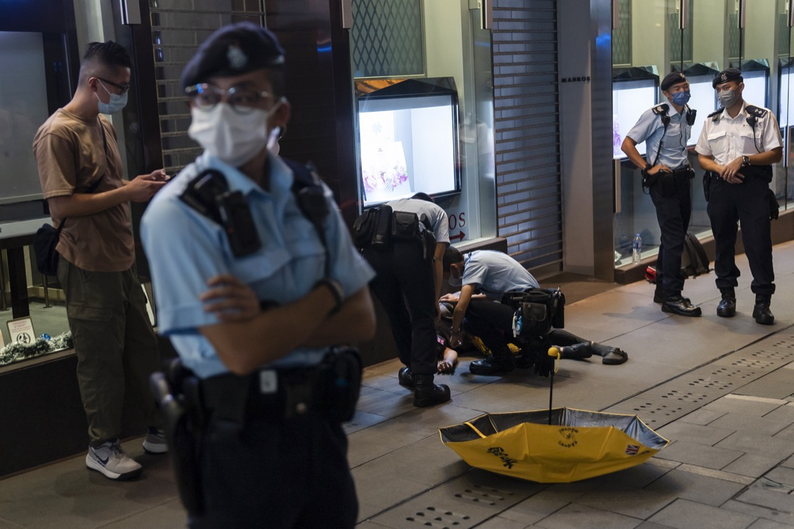

【現場】在香港聲援反封控抗議，政治風險更大了，但「至少種下了希望」
Table of Contents
「我的勇氣只有這張字牌這麼大，我還是來了。」

Figure 1: 2022年11月28日，網上發起「香港悼念烏魯木齊冤火與清零遇難者」活動，號召市民於中環D出口聚集，現場人士手持白紙聲援。攝：Stanley Leung/端傳媒
端傳媒編輯部 發自新加坡
刊登於 2022-11-29
【編者按】本文於11月29日下午刊出。因應同日晚上繼續有聲援行動，編輯部晚上更新了文章和標題後再刊發。
11月28日傍晚，Salt提早到達中環戲院里，準備參與「香港悼念烏魯木齊冤火與清零遇難者」活動。戲院里聚集的人愈來愈多，駐守的警察也漸漸增 加。人們以白紙為記，和其他人默默地站成一排。地上擺放了鮮花、蠟燭和電子蠟燭，也放了各種標語：「烏魯木齊11/24」、「誠心祝福你 捱得到新天地」。
不同於大陸各地的封控抗議浪潮，在反修例運動過後遭受打壓的香港街頭上，並沒有太多人放聲高喊口號。這是一場安靜的抗議-–—人們手持白紙或標語，連成一線或散落在不同位置；有人手持鮮花在街上徘徊往返；有人在旁邊默默看着抗議群眾，留至最後。
同日，中文大學中午和晚上都有聲援行動。校園內，有人手持黑色橫幅默站，橫幅寫有「你的生命，我的生命，本是一條命」標語；亦有人以口哨吹出《Do you hear the people sing？》旋律，喊出四通橋口號，如「不要核酸要吃飯，不要封控要自由」、「廣州加油」、「烏魯木齊加油」等。
29日晚上，香港大學、九龍上海街等地，也有悼念活動舉行，有人唱《國際歌》，也有聲援者呼籲港人也要爭取取消紅黃碼。
「大陸人都出來，那麼我們在香港，稍為呼吸fresh一點的地方，也是得出來。」來自廣東、來港唸碩士的Salt說。

Figure 2: 2022年11月28日，網上發起「香港悼念烏魯木齊冤火與清零遇難者」活動，號召市民於中環D出口聚集，現場人士手持白紙聲援。
到達臨界點的命運共同體
在中環的現場，是一場香港久違了的街頭抗議活動，最高峰時有約60人參與。Salt本來很怕把白紙拿出來，還緊張地問記者如何得知今次行動。後來，第一個人放下鮮花、蠟燭和電子蠟燭後，其他人也陸續加入。Salt也行動了，把寫上標語的白紙放在地上。
「我覺得我跟歷史一同在場。」Salt今年到香港修讀碩士，近日他得知，有朋友在廣州南亭大學城因抗議而被村民毆打，但沒有人被追責。「我們作為Diaspora（離散者），相對很多大陸人來說，我們暫時沒有體會到那種封控，但我們還是命運共同體。」
2020年全球疫情爆發，他在廣東某城鎮把自己困在房間幾個星期，除買菜等基本活動外，沒跟其他人接觸。他當時得了恐慌症，不時呼吸困難，「就是害怕死亡，我發作的時候會有瀕死感。」當時他想去醫院急症室，也因拿不到48小時內發出的核酸證明而無法成行。
活動這天，他收到朋友傳來悼念活動的宣傳，決定站出來。回想2019年，Salt在香港有參與反修例運動的遊行，但感覺自己是一個旁觀者，能理解運 動，但心裏知道未必能完全共情。3年多後的這一次抗議防疫的浪潮，令他感受更深，「Politics is everywhere，這是你避免不了的東西。」
從上海來港工作的James和朋友是最早一批到達中環悼念活動的參與者。活動開初氣氛謹慎緊張，James是面對多個傳媒鏡頭發言的第一人：「上海 的人不好在白紙上寫什麼東西，對吧？紙是一個象徵的符號。」他沒很擔心參與這場自發活動，「還好吧，我沒有發表什麼可能違反國安法或什麼的言論。」
James覺得這晚是一個機會，讓大家發表對大陸防疫政策的看法。他身在上海的父母在封控措施下，曾經被關約3個月。他有朋友的上海親人患心臟病，在2022年初封控期間，多次和官方人員溝通也無法前往醫院；愈發沉重的病痛壓力下，他最後從住所跳樓，自殺去世。
「長期都有一點點不幸的事情發生，我覺得新疆的事情不是最大的，但這是一個臨界點，大家都忍受不了。」他希望可以在香港跟上海的人互相和應，「我們要追求人身自由，我們不要無窮無盡地做核酸。我們希望有一天能把脫下口罩，恢復正常的生活。」

Figure 3: 2022年11月28日，網上發起「香港悼念烏魯木齊冤火與清零遇難者」活動，有市民到中環戲院里擺放鮮花時遭警方阻止。
文琪是來港讀書的碩士畢業生，回顧這3年的大陸防疫措施，她說走到街上悼念是一種累積的感受，「像二十大之前彭載舟的事件，觸動很大。」
「我覺得站在國內的街頭其實更勇敢……」文琪說，她有朋友在11月27日到北京亮馬橋示威，但遭居住地方的業主群組說要舉報他，「他們面臨的情況其實更難一點，更多人站出來，可以給國內勇敢的人一些保護。」
在戲院里一角，香港女生Hazel單獨舉起9張白紙拼砌的標語，一直閉著眼站着。她用紅色筆跡寫上11月24日烏魯木齊火災中的一句求救聲：「開 門！開門！救救我們！」另一角又寫：「我不是境外勢力，舉牌沒有錢。我是香港人，站出來是因為痛心」。紙張很大，羅列她的種種訴求，蓋過她半個身軀。
「這一刻我好孤獨，但想到遠方的人、尤其內地的人都願意出來，就覺得有力量。」Hazel低聲說，今次參與悼念最想表達的訊息是：「唔好驚。（不要怕。）」
她一直留意大陸的防疫新聞和抗議情況，認為這一波抗議行動曾出現與香港運動類似的民主訴求，「真的需要時間。情況很難改變，但我們可以慢慢爭取。」
在中文大學，晚上有同學在文化廣場聚集，大家你眼望我眼，用眼神確認大家的意圖。過了一會兒，人愈來愈多，有同學走到昔日的「民主牆」前獻花，亦有同學在一旁派白紙。
阿貓看到眾人拿着白紙站默點，感覺有點沒意思，於是在人潮中吹起口哨，哼着《Do You Hear The People Sing？》，希望炒熱氣氛，「It's my duty」。瞬間，身邊的同學也開始唱起來了。
「這是一種，忍無可忍的情緒吧」。阿貓是在中大讀書的上海人，他的老家在4月遭受封控，全家物資短缺，只剩下米和馬鈴薯，四處求助無門。從那時開始，阿貓開始反思大陸防疫政策對人的影響。
阿貓坦言，他一開始也是堅定的清零派，但直到今年疫情在中國大爆發，封控加劇，他意識到「國家沒有為即將出現的狀況做準備」，阿貓感到很絕望、痛心。
集會到後期，眾人拿着白紙，靜靜的站着，突然一個女生開始呼喊口號，「不要核酸要吃飯，不要封控要自由……」在場的參加者也有默契地配合，她一句，眾人一句，彼此和應着。
「這是人皆有之的同理心，我只是舉白紙、唱唱歌，這都是我力所能及的事情」。在中大念新聞的本地生Danny，看到大陸的示威，她很想做點事。有人用Airdrop向在場人士分享了他的備忘錄，裏面寫上所有口號，Danny就跟着一起喊。
過往幾年，雖然中大不少學生抗議活動都備受打壓，但今次Danny參與悼念活動也「沒有特別緊張」。她覺得有責任聲援中國大陸的抗議，「大家做的事也是類似上海、天津、武漢各地的事」、「大家都在」。

Figure 4: 2022年11月29日晚上，香港大學校園有人發起聲援中國反封管抗議的行動。
在港行動面對限制，站出來不容易
方羽今年20多歲，從廣東來港工作兩年。28日晚，她帶了白花還有紙牌到中大參加集會，上面寫了兩種字句：「Chinese queer support chinese people」。「我的勇氣只有這張字牌這麼大，我還是來了。」她說。
在疫情封控那段時間，住在廣州海珠區的朋友被封在小區裏面不能出來。後來示威浪潮爆發，人們彷彿看到破口，方羽的朋友形容自己「看到水馬都想要去衝撞」。
「他們都站出來了，雖然香港不是很安全的地方，我也要做點什麼。」方羽找到一點久違了的行動動力。但正因為中國大陸人的身分，要在香港參與示威抗議，一點都不容易。
在抗議的整個過程，方羽都舉着白紙遮擋着臉，下意識地保護身份。對比起中國抗議的朋友不怕被記者拍到臉、做得更前，她形容自己「只能更後」-–—「除 了國安法，我們也是拿着簽證在這裏的人。」她們擔心露面以後，除了要面對回大陸被「請喝茶」的後果，還要擔憂自己日後能否順利進入香港境內。多重身份暗藏 的風險讓她們忌諱，沒有辦法放開手腳去抗議。
而2019年反修例運動的經驗，也潛移默化地成為了她當下行動的規訓。「在大陸做行動，不是說承擔的風險性更低，畢竟這個事情，在大陸之後，是中斷 了30年後重新做的事。3年裏面，忍無可忍，是一種發洩，是情緒的發洩。」方羽覺得，也許正正因為這種長時間的中斷，使得街頭抗爭再現時，「沒有那麼多規 則感，所有事都是新的。」
對比之下，反修例運動後，香港的抗議活動面對前所無有的打壓，方羽覺得，陸生或港漂即便因為大陸事件第一次參加香港的抗議，「他都應該是對風險程度是知道的。」而這種知道讓他們失措，「不知道要在一個行動裏面要出頭到程度、或要站在什麼位置可以保護到自己。」
「我想回上海，想回去尖叫：『下台！』」2021年到香港大學讀書、27歲的陸生周森說。

Figure 5: 2022年11月29日晚上，香港大學校園有人發起聲援中國反封管抗議的行動。
周森參加了29日晚上在香港大學舉行的悼念活動。港大今年9月底開始，進校園不用掃瞄安心出行，但這天，在傍晚不到6時，保安人員便站在校園出入口要求學生及訪客掃瞄。
這三日，周森幾乎沒有休息，中國大陸接連不斷的抗議浪潮刺激着他的神經。28日晚，他也在中環聲援現場，返家途中，他甚至一度想在西環街頭喊起口號，就像2019年他在香港街上偶然聽到的那樣。
「現在也很想嘗試一下，比如約好11月30一起探出頭喊：『習近平下台！』」說完，周森冷靜下來，再補充，「雖然這個口號要不要現在喊、在哪喊，行動策略上也值得商榷。」
2019年香港掀起反修例運動時，周森想知道現場情況，也想了解境內外媒體聲音為何存在巨大差異，遂從大陸飛往香港，親抵現場，並定義自己是「觀察者」。那次，他在港大第一次遇見國殤之柱，對香港「竟容得下六四的紀念柱」感到很意外，也因此對香港有了新的印記和情感。
2021年下半年，陸續有消息傳出國殤之柱將會被校方拆除，他開始意識到，此前在港感受到的自由度並非理所當然。12月23日晚上，港大校方真的動 手了，收到消息的周森立刻借了相機衝到現場，幾乎跑遍校內周邊建築的至高點尋找拍攝位置，但國殤之柱被帳幕圍封着，他只能聽到一聲聲的敲擊。
12月24日，在「需要有人站出來」的驅使下，周森參與了港大內地生的抗議拆柱快閃行動，那是他第一次進行街頭行動，雖然忐忑害怕，但為了給同行的 人打氣，也努力顯示出鎮定的樣子。同樣出於「需要有人站出來」的心理，周森走入了今次中環的聲援現場，這一次，他覺得很坦然，不過，由於在27日港大校內 有陸生舉行悼念活動時被校方保安盤查，甚至叫來了警察，他又對29日同樣在校內進行的聲援活動感到不安。
據他了解，29日晚的活動牽頭人為了活動順利舉行，並沒有通知媒體採訪，只準備在活動後聯絡一些社交媒體帳號進行發布。
「在大陸往往是法不責眾，不落單是主要的行動策略。但香港，尤其是如今國安法的環境下，法不責眾可能不是一個可期待的選項，」周森說，「就像不久前，還有人因在社交媒體發布的言論而被落案檢控及遭還押。」
這個港大悼念活動，最後來了10多人一起舉白紙，其中一張紙上寫上「境外勢力」的「外」字，被紅筆劃掉，變了「境內勢力」。聲援者當中有陸生也有港 生，呼喊着「中國要有不一樣的聲音」。其中，有發言者不止聲援大陸的抗議，也呼籲香港人要為爭取「0＋0」、取消紅黃碼發聲。後來，有港生跟幾位聲援的陸 生說，「妳們很勇敢，加油。」

Figure 6: 2022年11月28日，香港中文大學學生響應號召，近60人聚集於文化廣場，手持白紙，悼念死難者。
當港漂面對冷嘲熱諷
在香港聲援現場，聲援者無分背景站在一起悼念死難者，也抗議不人道的封控。不過，網路輿論是另一個世界-–—不少香港人仍然記得2019年大陸人對香港示威的嘲諷、謾罵，甚至有人認為不需要同情大陸人現在的遭遇。
在香港連登討論區，在各個有關中國示威浪潮的帖文下，湧現一大波對聲援行動的批評：「不要隨便救中國人，中國人都是恩將仇報」、「他們不是爭取自由、是爭取解除封控」。
然而，中國人面對這一波封控的壓逼，或也有一點反思。11月27日，一名目前身處英國的中國女生在微博發文，表示現時中國發生的示威令她聯想起2019年香港反修例運動。當年，她到香港參加SAT考試，示威正值高潮，她聽到喊口號轟轟烈烈，便向朋友抱怨示威者「吃飽了撐着，鬧什麼鬧，還是日子過太好了」。
女生續稱，覺得當年的想法是出於無知。「時至今日，我才明白，是我跪了太久……」、「如果能和三年前的我對話，我想問問她『你還會叫那群香港人廢青嗎，那你現在又該如何稱呼你自己呢？』」
事實上，內地網民對反修例事件態度逆轉的論調，也常見於簡體輿論場。有網民表示：「一晃三年過去了，終於理解19年香港人，他們不是廢青，我們才是。」、「不勝唏噓，當年我們竟然喊着我支持香港警察！棍子沒打身上都是冷眼旁觀者。」
「我知道有些大陸人還是矛盾-–—2019年對這邊的人誤解、冷嘲熱諷，現在輪到自己了。」James說，「我不矛盾，我很一貫。我認為自由是社會最終的價值。」
他認為，在港的大陸人普遍對目前的清零政策有不滿，「清零是腦子正常的人都覺得不對，很難錯位。但他更錯位的可能是更高層面的事情。說老實，為什麼有清零政策？是什麼允許清零政策施實了這麼長時間？他未必想得清楚。」
在社交媒體，Salt曾經讀到部分香港人對大陸抗議的嘲諷，「有些香港人在嘲笑大陸人，為什麼封控到吃不了飯的時候才出來？」他心情複雜又難受，覺 得這些輿論把所有大陸民眾定性為順民，而同時大陸反抗者又被親政府聲音描述為外部勢力，「一派人覺得你是外部勢力；一派人覺得你的反抗訴求太實際，你當奴 才當久了、才開始抗議。唉，就覺得有點矛盾。」
在香港中文大學陸生常用的微信公眾號「馬料水bb機」中，有香港學生在「樹洞」功能中留言，「看到內地的情況我內心也有悲憫也有共情，但我也無法遺 忘，更無法原諒19年的時候，大部分內地人說出的話……我們也許走在同一條路上，但我無法與你們互相攙扶。」在留言處中，大家統一寫下：「理 解。」
Salt並非完全不理解部分香港人冷漠態度的來由，「他們的本土意識冒升了，也已經沒有大中華情意結。」他如此總結，「我理解這是一種本土主義、自 由主義和漢民族主義之間的博弈。」Salt同意，部分香港運動參與者覺得曾在運動中深受大陸輿論攻擊，因而生出不願意關心的情緒。但他也認為，大陸的民主 派聲音一直在輿論場隱形。
無論如何，這晚他留意到有香港人到場聲援，「很感謝他們，大家都追求自由，一自由各表。」

Figure 7: 2022年11月28日，香港中文大學學生響應號召，近60人聚集於文化廣場，手持燭光及放置鮮花，悼念死難者。
目前流亡海外的香港立法會前議員羅冠聰於Facebook發文，認為港人對中國示威無感，不難理解。他提到自己的過去，曾連番被小粉紅連群結隊出征，但在2022年的時空，卻有一群願意冒險示威，或為2019年感到悔疚的中國人，而他們跟小粉紅不同。
「我單純地認為，任何一個運動，愈多人支持愈好，愈多人理解愈好……了解中國示威，不一定要聲援，但也毋須落井下石。」羅冠聰說。
方羽並不是第一次「走出去」。用她的話說，之前關注的是「更本地的議題」。比如2021年平安夜，香港中文大學的民主女神像被校方移走一事，方羽也 有注意並到場抗議。可是她感到，像她們一樣「不是小粉紅」的在港大陸人，很容易就被人拋進二元對立的位置上，最後只能「是更加隱身的存在。」
在28日晚中大集會以後，她在IG見到有人「開poll」（發起非學術調查），問及大家對香港的聲援行動有什麼感覺，到底是「同為天涯淪落人，We connect！！！」，還是「三年前笑鳩我哋，今日我心涼（三年前取笑我們，今天我心涼）」，結果有3成半人點選「心涼」。方羽很在意，坦言有點憤怒。
她很清楚也理解當年香港發生雨傘運動和反修例運動時，微博的小粉紅或評論都在中傷香港人，挑起對立，「但支持香港本地的大陸人，大家一直都在。」而只是礙於身份和風險，「我們沒有被本地的香港人看到，再出來做更出頭的事情，又要承擔更多的風險。」
她調適自己的情緒，去感知憤怒，她猜，「可能是來自這樣一種委屈吧。」
「這是我第一次感受到這種委屈。我是2020年8月來的，到現在兩年多。就是在香港的低潮後來的。」
「好粗魯，我會叫他們『支那人』，（以前）真的血海深仇。」中大政治與行政學系的香港學生Vitor，說起對中國人的恨，但「每個人在運動的開始、結束、沉澱，其實都會改變自己的想法」。
昨午，他有份組織中大午間默站。他說，從決定默站到行動，只花了半天思考。曾經，他是促使中港人二元對立的人。
在2019年反修例運動時，Vitor感覺香港人所遭受的所有苦難，都是來自於大陸的政權，甚至認為只要容忍這個政權的存在，就已經是這個政權的共犯。
但目睹今次大陸的抗爭後，Vitor改變了以往的看法。在大陸示威進行得如火如荼的晚上，Vitor看着直播中被拉走的民眾，心裏既擔心又無奈。他 下意識地為所有被帶走的人截圖，留下一張張為自由抗爭的人像，然後赫然發現，這不是2019年的香港，「這是發生在大陸的抗爭」。但當刻，他覺得兩者已經 沒有分別。
Vitor找來幾位香港同學發起默站，他驚訝有陸生走過來說「加油」，又有同學拿起白紙，站在一起。他感覺那種他之前對於大陸的怨恨、那種複雜的情感，「一下子就化解了」。

Figure 8: 2022年11月28日，網上發起「香港悼念烏魯木齊冤火與清零遇難者」活動，號召市民於中環戲院里聚集聲援中國抗議防疫政策示威，期間一名男子襲擊一名舉起黃色雨傘的婆婆致倒地受傷，由救護車送往醫院。
「不指望畢其功於一役」
28日晚，中環的悼念活動持續約一小時後，警察透過咪高峰警告在場群眾違反限聚令，要求他們離開。警方拉起橙色封鎖線圍封鮮花堆，以及手持白紙的10餘人；儘管如此，有人仍然繼續走入封鎖線內，高舉白紙。最終，19人被警察查看身份證，作出警告。
但很快，人群又在另一邊組成新的、寧靜的白紙陣。警察加緊驅趕行動時，一人用普通話高喊：「12人一組散開！」人們馬上散開，重新在街道上流動起來。
Salt最初擺放標語紙張的角落，最終堆積了更多陌生人的白紙和鮮花。兩小時後，悼念人潮逐漸散去，他們留下許多標語，其中一張寫道：「勇敢是唯一 的姿勢」。兩名食環署清潔工在警察的指示下，把紙張、鮮花掃進垃圾袋。警察用水澆熄燭光，而電子蠟燭在黑色垃圾膠袋中仍然透出亮光，地上有暗紅色蠟痕。
「讓大家看到了文字和思想就已經足夠了。就像我這次經歷，能讓那麼多人了解到我和我們的想法，無論改不改變，我都在一定程度上有政治獲得感。播下了種子，哪怕葉子被剪掉，至少種下了希望。」Salt說。
「我的預期很低，並不指望畢其功於一役，」周森說，「但目前一些城市的防疫已開始放鬆，這次行動也開始讓一些人意識到有公共參與這件事，我想這就很好了。」
（尊重受訪者意願，文琪、Hazel、Vitor、Danny、阿貓、方羽、周森均為化名。）

2017年7月，端傳媒啟動了對深度內容付費的會員機制。但本文因關乎重大公共利益，我們特別設置全文免費閱讀，歡迎你轉發、參與討論，也期待你付費支持我們，瀏覽更多深度內容。
本刊載內容版權為端傳媒或相關單位所有，未經端傳媒編輯部授權，請勿轉載或複製，否則即為侵權。